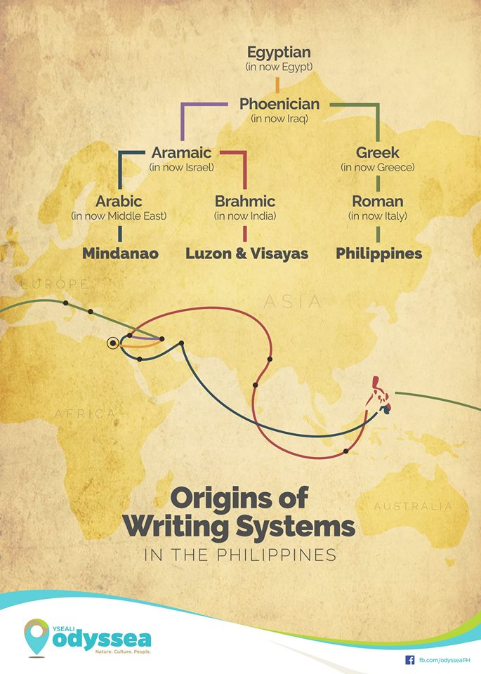
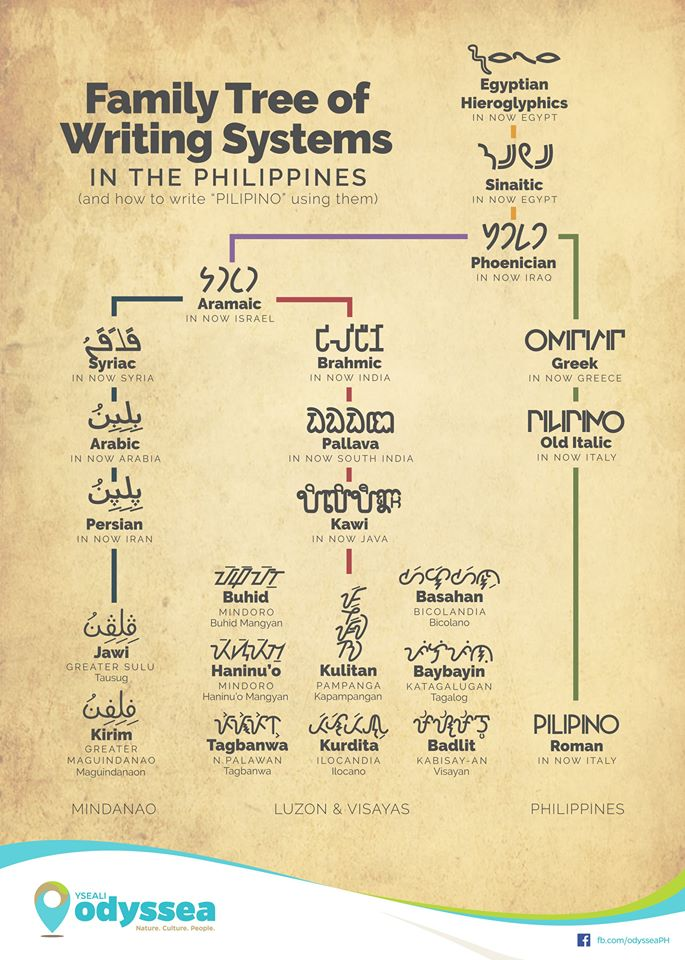

How Baybayin Is Related to the Latin Alphabet
By AverageScipioFan
IT'S A WELL-KNOWN AND NOTICEABLE FACT that Tagalog draws on languages such as Spanish, Chinese, Malay, Sanskrit, and many more for its vocabulary. However, one might be surprised with the origin of its native writing sytem, Baybayin. Goods can travel far. Silk from China and spices from India were able to travel as far as Europe through trade. How much more are words? How much more are entire writing systems?
The following are charts on the origin of Baybayin taken from https://interaksyon.philstar.com/trends-spotlights/2018/11/19/138510/baybayin-kurdita-at-iba-pa-origins-and-significance-of-native-philippine-scripts/. Check it out for yourself, it honestly looks cool.
 